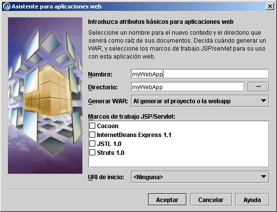

Desarrollo de aplicaciones web
El desarrollo web es una función de JBuilder Developer y Enterprise. El desarrollo de applets es una función de todas las ediciones de JBuilder.
JBuilder proporciona numerosas herramientas que facilitan el desarrollo de aplicaciones web:
- Los asistentes facilitan la creación de aplicaciones web, applets, servlets, páginas JavaServer (JSP), aplicaciones web habilitadas para Struts y archivos JNLP, además de páginas de inicio para aplicaciones Java Web Start.
- El marco y la aceptación de bibliotecas de etiquetas JSP permiten añadir fácilmente a la WebApp o la JSP la compatibilidad con diversos marcos y bibliotecas de etiquetas.
- JBuilder incluye conocidos marcos y bibliotecas de etiquetas, como Struts, JSTL (biblioteca de etiquetas estándar para páginas JSP) e InternetBeans Express.
- La generación automática de archivos WAR facilita la creación de recopilatorios para las aplicaciones web.
- El Creador de recopilatorios ayuda a crear archivos JAR para applets, applets Java Web Start u aplicaciones Java Web Start.
- El Editor DD de WebApp proporciona una interfaz gráfica en la que se puede modificar el archivo descriptor de distribución web.xml.
- El Editor de configuración de Struts proporciona una interfaz gráfica en la que se puede modificar el archivo descriptor de distribución struts-config.xml.
Asistente para aplicaciones web

Si desea más información, consulte:
Guía del desarrollador de aplicaciones web Introducción
Guía del desarrollador de aplicaciones web Introducción general al proceso de desarrollo de aplicaciones web
Referencia de la biblioteca de componentes DataExpress: Package com.borland.internetbeans